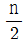
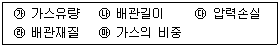

가스산업기사 (2019-09-21 기출문제)
1과목: 연소공학
1. 수소 25v%, 메탄 50v%, 에탄 25v%인 혼합가스가 공기와 혼합된 경우 폭발하한계(v%)는 약 얼마인가? (단, 폭발 하한계는 수소 4v%, 메탄 5v%, 에탄 3v% 이다.)
- 3.1
- 3.6
- 4.1
- 4.6
(정답률: 80%)

2. CmHn 1 Sm3을 완전 연소시켰을 때 생기는 H2O의 양은?

Sm3- n Sm3
- 2n Sm3
- 4n Sm3
(정답률: 79%)
3. 실제가스가 이상기체 상태방정식을 만족하기 위한 조건으로 옳은 것은?
- 압력이 낮고, 온도가 높을 때
- 압력이 높고, 온도가 낮을 때
- 압력과 온도가 낮을 때
- 압력과 온도가 높을 때
(정답률: 79%)
4. 0℃, 1atm에서 2L의 산소와 0℃, 2atm에서 3L의 질소를 혼합하여 1L로 하면 압력은 약 몇 atm 이 되는가?
- 1
- 2
- 6
- 8
(정답률: 63%)
5. 가연성 가스의 위험성에 대한 설명으로 틀린 것은?
- 폭발범위가 넓을수록 위험하다.
- 폭발범위가 밖에서는 위험성이 감소한다.
- 일반적으로 온도나 압력이 증가할수록 위험성이 증가한다.
- 폭발범위가 좁고 하한계가 낮을 것은 위험성이 매우 적다.
(정답률: 83%)
6. 메탄을 이론공기로 연소시켰을 때 생성물 중 질소의 분압은 약 몇 kPa 인가? (단, 메탄과 공기는 100 kPa, 25℃에서 공급되고 생성물의 압력은 100 kPa 이다.)
- 36
- 71
- 81
- 92
(정답률: 59%)
7. 아세틸렌 가스의 위험도(H)는 약 얼마인가?
- 21
- 23
- 31
- 33
(정답률: 78%)
8. 물질의 상변화는 일으키지 않고 온도만 상승시키는데 필요한 열을 무엇이라고 하는가?
- 잠열
- 현열
- 증발열
- 융해열
(정답률: 76%)
9. 불꽃 중 탄소가 많이 생겨서 황색으로 빛나는 불꽃을 무엇이라 하는가?
- 휘염
- 층류염
- 환원염
- 확산염
(정답률: 85%)
10. 전 폐쇄 구조인 용기 내부에서 폭발성가스의 폭발이 일어났을 때, 용기가 압력을 견디고 외부의 폭발성 가스에 인화할 우려가 없도록 한 방폭구조는?
- 안전증 방폭구조
- 내압 방폭구조
- 특수 방폭구조
- 유입 방폭구조
(정답률: 89%)
11. 공기 중에서 압력을 증가시켰더니 폭발범위가 좁아지다가 고압 이후부터 폭발범위가 넓어지기 시작했다. 이는 어떤 가스인가?
- 수소
- 일산화탄소
- 메탄
- 에틸렌
(정답률: 83%)
12. 일정온도에서 발화할 때까지의 시간을 발화지연이라 한다. 발화지연이 짧아지는 요인으로 가장 거리가 먼 것은?
- 가열온도가 높을수록
- 압력이 높을수록
- 혼합비가 완전산화에 가까울수록
- 용기의 크기가 작을수록
(정답률: 74%)
13. 다음 중 공기비를 옳게 표시한 것은?
- 실제공기량 / 이론공기량
- 이론공기량 / 실제공기량
- 사용공기량 / (1 - 이론공기량)
- 이론공기량 / (1 - 사용공기량)
(정답률: 82%)
14. B, C급 분말소화기의 용도가 아닌 것은?
- 유류 화재
- 가스 화재
- 전기 화재
- 일반 화재
(정답률: 79%)
15. 기체동력 사이클 중 가장 이상적인 이론 사이클로, 열역학 제2법칙과 엔트로피의 기초가 되는 사이클은?
- 카르노사이클(Carnot cycle)
- 사바테사이클(Sabathe cycle)
- 오토사이클(Otto cycle)
- 브레이턴사이클(Brayton cycle)
(정답률: 76%)
16. 가스의 연소속도에 영향을 미치는 인자에 대한 설명으로 틀린 것은?
- 연소속도는 주변 온도가 상승함에 따라 증가한다.
- 연소속도는 이론혼합기 근처에서 최대이다.
- 압력이 증가하면 연소속도는 급격히 증가한다.
- 산소농도가 높아지면 연소범위가 넓어진다.
(정답률: 63%)
17. 난류확산화염에서 유속 또는 유량이 증대할 경우 시간이 지남에 따라 화염의 높이는 어떻게 되는가?
- 높아진다.
- 낮아진다.
- 거의 변화가 없다.
- 어느 정도 낮아지다가 높아진다.
(정답률: 68%)
18. 층류 연소속도 측정법 중 단위화염 면적당 단위시간에 소비되는 미연소 혼합기체의 체적을 연소속도로 정의하며 결정하며 오차가 크지만 연소속도가 큰 혼합기체에 편리하게 이용되는 측정 방법은?
- Slot 버너법
- Bunsen 버너법
- 평면 화염 버너법
- Soap Bubble 법
(정답률: 78%)
19. 최소 점화에너지에 대한 설명으로 옳은 것은?
- 유속이 증가할수록 작아진다.
- 혼합기 온도가 상승함에 따라 작아진다.
- 유속 20m/s 까지는 점화 에너지가 증가하지 않는다.
- 점화 에너지의 상승은 혼합기 온도 및 유속과는 무관하다.
(정답률: 58%)
20. 분젠버너에서 공기의 흡입구를 닫았을 때의 연소나 가스라이터의 연소 등 주변에 볼 수 있는 전형적인 기체연료의 연소형태로서 화염이 전파하는 특징을 갖는 연소는?
- 분무연소
- 확산연소
- 분해연소
- 예비혼합연소
(정답률: 83%)
2과목: 가스설비
21. 펌프의 토출량이 6m3/min 이고, 송출구의 안지름이 20cm 일 때 유속은 약 몇 m/s 인가?
- 1.5
- 2.7
- 3.2
- 4.5
(정답률: 57%)
22. 탄소강에서 탄소 함유량의 증가와 더불어 증가하는 성질은?
- 비열
- 열팽창율
- 탄성계수
- 열전도율
(정답률: 58%)
23. 탱크로리로부터 저장탱크로 LPG 이송 시 잔가스 회수가 가능한 이송방법은?
- 압축기 이용법
- 액송펌프 이용법
- 차압에 의한 방법
- 압축가스 용기 이용법
(정답률: 74%)
24. 메탄가스에 대한 설명으로 옳은 것은?
- 담청색의 기체로서 무색의 화염을 낸다.
- 고온에서 수증기와 작용하면 일산화탄소와 수소를 생성한다.
- 공기 중에 30%의 메탄가스가 혼합된 경우 점화하면 폭발한다.
- 올레핀계탄화수솔서 가장 간단한 형의 화합물이다.
(정답률: 74%)
25. 조정압력이 3.3 kPa 이하이고 노즐 지름이 3.2mm 이하인 일반용 LP가스 압력조정기의 안전장치 분출용량은 몇 L/h 이상이어야 하는가?
- 100
- 140
- 200
- 240
(정답률: 59%)
26. 시간당 50000kcal를 흡수하는 냉동기의 용량은 약 몇 냉동톤인가?(오류 신고가 접수된 문제입니다. 반드시 정답과 해설을 확인하시기 바랍니다.)
- 3.8
- 7.5
- 15
- 30
(정답률: 66%)
27. 메탄염소화에 의해 염화메틸(CH3Cl)을 제조할 때 반응 온도는 얼마 정도로 하는가?
- 100℃
- 200℃
- 300℃
- 400℃
(정답률: 60%)
28. 동관용 공구 중 동관 끝을 나팔형으로 만들어 압축이음 시 사용하는 공구는?
- 익스펜더
- 플레어링 툴
- 사이징 툴
- 리머
(정답률: 70%)
29. 원심펌프의 회전수가 1200rpm 일 때 양정 15m, 송출유량 2.4 m3/min, 축동력 10 Ps 이다. 이 펌프를 2000 rpm 으로 운전할 때의 양정(H)은 약 몇 m 가 되겠는가? (단, 펌프의 효율은 변하지 않는다.)
- 41.67
- 33.75
- 27.78
- 22.72
(정답률: 47%)
30. 금속의 열처리에서 풀림(annealing)의 주된 목적은?
- 강도 증가
- 인성 증가
- 조직의 미세화
- 강을 연하게 하여 기계 가공성을 향상
(정답률: 70%)
31. 기밀성 유지가 양호하고 유량조절이 용이하지만 압력손실이 비교적 크고 고압의 대구경 밸브로는 적합하지 않은 특징을 가지는 밸브는?
- 플러그밸브
- 글로브밸브
- 볼밸브
- 게이트밸브
(정답률: 73%)
32. 가스 배관의 구경을 산출하는데 필요한 것으로만 짝지어진 것은?

- ㉮, ㉯, ㉰, ㉱
- ㉯, ㉰, ㉱, ㉲
- ㉮, ㉯, ㉰, ㉲
- ㉮, ㉯, ㉱, ㉲
(정답률: 80%)
33. LPG 소비설비에서 용기의 개수를 결정할때 고려사항으로 가장 거리가 먼 것은?
- 감압방식
- 1가구당 1일 평균가스 소비량
- 소비자 가구수
- 사용가스의 종류
(정답률: 68%)
34. 밀폐식 가스연소기의 일종으로 시공성은 물론 미관상도 좋고, 배기가스 중독사고의 우려도 적은 연소기 유형은?
- 자연배기(CF)식
- 강제배기(FE)식
- 자연급배기(BF)식
- 강제급배기(FF)식
(정답률: 70%)
35. 가스 충전구의 나사방향이 왼나사이어야 하는 것은?
- 암모니아
- 브롬화메틸
- 산소
- 아세틸렌
(정답률: 69%)
36. 펌프의 공동현상(cavitation) 방지방법으로 틀린 것은?
- 흡입양정을 짧게 한다.
- 양흡입 펌프를 사용한다.
- 흡입 비교 회전도를 크게 한다.
- 회전차를 물속에 완전히 잠기게 한다.
(정답률: 75%)
37. 공기 액화장치 중 수소, 헬륨을 냉매로 하며 2개의 피스톤이 한 실린더에 설치되어 팽창기와 압축기의 역할을 동시에 하는 형식은?
- 캐스케이드식
- 캐피자식
- 클라우드식
- 필립스식
(정답률: 69%)
38. 가스액화 분리장치의 구성이 아닌 것은?
- 한랭 발생장치
- 불순물 제거장치
- 정류(분축, 흡수)장치
- 내부연소식 반응장치
(정답률: 63%)
39. 강제 급배기식 가스온수보일러에서 보일러의 최대 가스소비량과 각 버너의 가스소비량은 표시차의 얼마 이내인 것으로 하여야 하는가?
- ±5%
- ±8%
- ±10%
- ±15%
(정답률: 72%)
40. 공기 액화 분리장치의 폭발 원인이 될 수 없는 것은?
- 공기 취입구에서 아르곤 혼입
- 공기 취입구에서 아세틸렌 혼입
- 공기 중 질소 화합물(NO, NO2) 혼입
- 압축기용 윤활유의 분해에 의한 탄화수소의 생성
(정답률: 76%)
3과목: 가스안전관리
41. 다음의 액화가스를 이음매 없는 용기에 충전할 경우 그 용기에 대하여 음향검사를 실시하고 음향이 불량한 용기는 내부조명검사를 하지 않아도 되는 것은?
- 액화프로판
- 액화암모니아
- 액화탄산가스
- 액화염소
(정답률: 57%)
42. 고압가스 냉동제조지설에서 해당 냉동설비의 냉동능력에 대응하는 환기구의 면적을 확보하지 못하는 때에는 그 부족한 환기구 면적에 대하여 냉동능력 1ton 당 얼마 이상의 강제환기장치를 설치해야 하는가?
- 0.⑤ m3/분
- 1 m3/분
- 2 m3/분
- 3 m3/분
(정답률: 47%)
43. 산소와 혼합가스를 형성할 경우 화염온도가 가장 높은 가연성가스는?
- 메탄
- 수소
- 아세틸렌
- 프로판
(정답률: 62%)
44. 신규검사 후 경과연수가 20년 이상된 액화석유가스용 100L 용접용기의 재검사 주기는?
- 1년마다
- 2년마다
- 3년마다
- 5년마다
(정답률: 54%)
45. 용기에 의한 액화석유가스 사용시설에서 호칭지름이 20mm인 가스배관을 노출하여 설치할 경우 배관이 움직이지 않도록 고정장치를 몇 m 마다 설치하여야 하는가?
- 1m
- 2m
- 3m
- 4m
(정답률: 73%)
46. 기업활동 전반을 시스템으로 보고 시스템 운영 규정을 작성·시행하여 사업장에서의 사고 예방을 위하여 모든 형태의 활동 및 노력을 효과적으로 수행하기 위한 체계적이고 종합적인 안전관리체계를 의미하는 것은?
- MMS
- SMS
- CRM
- SSS
(정답률: 81%)
47. 도시가스용 압력조정기란 도시가스 정압기 이외에 설치되는 압력조정기로서 입구 쪽 호칭지름과 최대표시유량을 각각 바르게 나타낸 것은?
- 50 A 이하, 300 Nm3/h 이하
- 80 A 이하, 300 Nm3/h 이하
- 80 A 이하, 500 Nm3/h 이하
- 1000 A 이하, 500 Nm3/h 이하
(정답률: 72%)
48. 일반도시가스시설에서 배관 매설 시 사용하는 보호포의 기준으로 틀린 것은?
- 일반형 보호포와 내압력형 보호포로 구분한다.
- 잘 끊어지지 않는 재질로 직조한 것으로 두게 0.2mm 이상으로 한다.
- 최고 사용압력이 중압 이상인 배관의 경우에는 보호판의 상부로부터 30cm 이상 떨어진 곳에 보호포를 설치한다.
- 보호포는 호칭지름에 10cm를 더한 폭으로 설치한다.
(정답률: 53%)
49. 용기의 각인 기호에 대해 잘못 나타낸 것은?
- V : 내용적
- W : 용기의 질량
- TP : 기밀시험압력
- FP : 최고충전압력
(정답률: 80%)
50. 공업용 용기의 도색 및 문자표시의 색상으로 틀린 것은?
- 수소 – 주황색으로 용기도색, 백색으로 문자표기
- 아세틸렌 – 황색으로 용기도색, 흑색으로 문자표기
- 액화암모니아 – 백색으로 용기도색, 흑색으로 문자표기
- 액화염소 – 회색으로 용기도색, 백색으로 문자표기
(정답률: 77%)
51. 차량에 고정된 탱크의 내용적에 대한 설명으로 틀린 것은?
- 액화천연가스 탱크의 내용적은 1만 8천 L를 초과할 수 없다.
- 산소 탱크의 내용적은 1만 8천 L를 초과할 수 없다.
- 염소 탱크의 내용적은 1만 2천 L를 초과할 수 없다.
- 암모니아 탱크의 내용적은 1만 2천 L를 초과할 수 없다.
(정답률: 62%)
52. 액화석유가스의 안전관리 및 사업법상 허가대상이 아닌 콕은?
- 퓨즈콕
- 상자콕
- 주물연소기용노즐콕
- 호스콕
(정답률: 61%)
53. 가스안전성평가기법 중 정성적 안전성 평가기법은?
- 체크리스트 기법
- 결함수분석 기법
- 원인결과분석 기법
- 작업자실수분석 기법
(정답률: 84%)
54. 다음 중 가연성가스가 아닌 것은?
- 아세트알데히드
- 일산화탄소
- 산화에틸렌
- 염소
(정답률: 76%)
55. 용기에 의한 액화석유가스 사용시설에서 저장능력이 100kg을 초과하는 경우에 설치하는 용기보관실의 설치기준에 대한 설명으로 틀린 것은?
- 용기는 용기보관실 안에 설치한다.
- 단층구조로 설치한다.
- 용기보관실의 지붕은 무거운 방염재료로 설치한다.
- 보기 쉬운 곳에 경계표지를 설치한다.
(정답률: 83%)
56. 안전관리규정의 실시기록은 몇 년간 보존하여야 하는가?
- 1년
- 2년
- 3년
- 5년
(정답률: 68%)
57. 다음 중 특정고압가스가 아닌 것은?
- 수소
- 질소
- 산소
- 아세틸렌
(정답률: 69%)
58. 사람이 사망하거나 부상, 중독 가스사고가 발생하였을 때 사고의 통보 내용에 포함되는 사항이 아닌 것은?
- 통보자의 인적사항
- 사고발생 일시 및 장소
- 피해자 보상 방언
- 사고내용 및 피해현황
(정답률: 83%)
59. 고압가스 일반제조시설의 설치기준에 대한 설명으로 틀린 것은?
- 아세틸렌의 충전용 교체밸브는 충전하는 장소에서 격리하여 설치한다.
- 공기액화분리기로 처리하는 원료공기의 흡입구는 공기가 맑은 곳에 설치한다.
- 공기액화분리기의 액화공기탱크와 액화산소증발기 사이에는 석유류, 유지류, 그 밖의 탄화수소를 여과, 분리하기 위한 여과기를 설치한다.
- 에어졸제조시설에는 정압충전을 위한 레벨장치를 설치하고 공업용 제조시설에는 불꽃길이 시험장치를 설치한다.
(정답률: 60%)
60. 저장탱크에 의한 액화석유가스저장소에서 지상에 설치하는 저장탱크, 그 받침대, 저장탱크에 부속딘 펌프 등이 설치된 가스설비실에는 그 외면으로부터 몇 m 이상 떨어진 위치에서 조작할 수 있는 냉각장치를 설치하여야 하는가?
- 2m
- 5m
- 8m
- 10m
(정답률: 59%)
4과목: 가스계측
61. 가스누출검저기 중 가스와 공기의 열전도도가 다른 것을 측정원리로 하는 검지기는?
- 반도체식 검지기
- 접촉연소식 검지기
- 서머스테드식 검지기
- 불꽃이온화식 검지기
(정답률: 56%)
62. 렌즈 또는 반사경을 이용하여 방사열을 수열판으로 모아 고온 물체의 온도를 측정할대 주로 사용하는 온도계는?
- 열전온도계
- 저항온도계
- 열팽창온도계
- 복사온도계
(정답률: 72%)
63. 계량기 형식 승인 번호의 표시방법에서 계량기의 종류별 기호 중 가스미터의 표시 기호는?
- G
- M
- L
- H
(정답률: 69%)
64. 화씨[°F]와 섭씨[℃]의 온도눈금 수치가 일치하는 경우의 절대온도[K]는?
- 201
- 233
- 313
- 345
(정답률: 72%)
65. 가스계량기의 1주기 체적의 단위는?
- L/min
- L/hr
- L/rev
- cm3/g
(정답률: 76%)
66. 오리피슬 유량을 측정하는 경우 압력차가 2배로 변했다면 유량은 몇 배로 변하겠는가?
- 1배
- √2배
- 2배
- 4배
(정답률: 72%)
67. 기체크로마토그래피의 측정 원리로서 가장 옳은 설명은?
- 흡착제를 충전한 관속에 혼합시료를 넣고, 용제를 유동시키면 흡수력 차이에 따라 성분의 분리가 일어난다.
- 관속을 지나가는 혼합기체 시료가 운반기체에 따라 분리가 일어난다.
- 혼합기체의 성분이 운반기체에 녹는 용해도 차이에 따라 성분의 분리가 일어난다.
- 혼합기체의 성분은 관내에 자기장의 세기에 따라 분리가 일어난다.
(정답률: 59%)
68. 압력계와 진공계 두 가지 기능을 갖춘 압력 게이지를 무엇이라고 하는가?
- 전자압력계
- 초음파압력계
- 부르동간(Bourdon tube)압력계
- 컴파운드게이지(Compound gauge)
(정답률: 67%)
69. 전기세탁기, 자동판매기, 승강기, 교통신호기 등에 기본적으로 응용되는 제어는?
- 피드백제어
- 시퀀스제어
- 정치제어
- 프로세스제어
(정답률: 75%)
70. 다음 중 기기분석법이 아닌 것은?
- Chromatography
- Iodometry
- Colorimetry
- Polarography
(정답률: 66%)
71. 루트미터에 대한 설명으로 가장 옳은 것은?
- 설치면적이 작다.
- 실험실용으로 적합하다.
- 사용 중에 수위 조정 등의 유지 관리가 필요하다.
- 습식가스미터에 비해 유량이 정확하다.
(정답률: 63%)
72. 가스 누출 시 사용하는 시험지의 변색 현상이 옳게 연결된 것은?
- H2S : 전분지 → 청색
- CO : 염화파라듐지 → 적색
- HCN : 하리슨씨시약 → 황색
- C2H2 : 염화제일동 착염지 → 적색
(정답률: 62%)
73. 목표치에 따른 자동제어의 종류 중 목표값이 미리 정해진 시간적 변화를 행할 경우 목표값에 따라서 변동하도록 한 제어는?
- 프로그램제어
- 캐스케이드제어
- 추종제어
- 프로세스제어
(정답률: 65%)
74. 도로에 매설된 도시가스가 누출되는 것을 감지하여 분석한 후 가스누출 유무를 알려주는 가스검출기는?
- FID
- TCD
- FTD
- FPD
(정답률: 74%)
75. 다음 중 유체에너지를 이용하는 유량계는?
- 터빈유량계
- 전자기유량계
- 초음파유량계
- 열유량계
(정답률: 77%)
76. 오르자트 가스분석계에서 알칼리성 피로카롤을 흡수액으로 하는 가스는?
- CO
- H2S
- CO2
- O2
(정답률: 58%)
77. 고압으로 밀폐된 탱크에 가장 적합한 액면계는?
- 기포식
- 차압식
- 부자식
- 편위식
(정답률: 67%)
78. 출력이 일정한 값에 도달한 이후의 제어계의 특성을 무엇이라고 하는가?
- 스텝응답
- 과도특성
- 정상특성
- 주파수응답
(정답률: 65%)
79. 공업용 액면계가 갖추어야 할 조건으로 옳지 않은 것은?
- 자동제어장치에 적용 가능하고, 보수가 용이해야 한다.
- 지시, 기록 또는 원격측정이 가능해야 한다.
- 연속측정이 가능하고 고온, 고압에 견디어야 한다.
- 액위의 변화속도가 느리고, 액면의 상, 하한계의 적용이 어려워야 한다.
(정답률: 83%)
80. 감도에 대한 설명으로 옳지 않은 것은?
- 지시량변화/측정량 변화로 나타낸다.
- 측정량의 변화에 민감한 정도를 나타낸다.
- 감도가 좋으면 측정시간은 짧아지고 측정범위는 좁아진다.
- 감도의 표시는 지시계의 감도와 눈금나비로 표시한다.
(정답률: 79%)
- 수소의 폭발 하한계: 4v%
- 메탄의 폭발 하한계: 5v%
- 에탄의 폭발 하한계: 3v%
따라서, 혼합가스의 폭발 하한계는 다음과 같이 계산할 수 있다.
폭발 하한계 = (수소의 부피 비율 x 수소의 폭발 하한계) + (메탄의 부피 비율 x 메탄의 폭발 하한계) + (에탄의 부피 비율 x 에탄의 폭발 하한계)
= (0.25 x 4) + (0.5 x 5) + (0.25 x 3)
= 1 + 2.5 + 0.75
= 4.25v%
따라서, 이 혼합가스의 폭발 하한계는 약 4.25v%이다. 정답은 보기에서 가장 가까운 4.1v%이다.